Note
This page has been archived and will not be updated. This is
because it was submitted as part of the publication of
respR in Methods in Ecology and Evolution, and has been
retained unchanged for reference. Any results and code outputs shown are
from respR v1.1 code. Subsequent updates to
respR should produce the same or very similar results.
Introduction
To our current knowledge, one other R package, LoLinR
(Olito et al. 2017), performs ranking techniques on time series data.
The respR and LoLinR packages use
fundamentally different techniques to estimate linear regions of data.
We detail auto_rate()’s methods here.
LoLinR’s methods can be found in their online vignette here,
and Olito et al. (JEB, 2017).
To summarise the main differences between the two methods:
auto_rate()uses machine learning techniques to detect linear segments first before running linear regressions on these data regions.LoLinR, by contrast, performs all possible linear regressions on the data first, and then implements a ranking algorithm such that the most linear regions are top-ranked.LoLinR’s algorithms use three different metrics to select linear data, in which at least one performs very well to detect linear segments – even if a small amount data is provided (<100 samples). In comparison,auto_rate()uses only one method (kernel density estimation), which performs less accurately at smaller sample sizes, but that accuracy increases greatly with more data available.
- Because
auto_rate()detects linear data first before it performs linear regressions, it is several orders of magnitude faster thanLoLinR. Thusauto_rate()is ideal for large data. On the other hand,LoLinRis restricted to small datasets (see below).
Thus, even though both packages can perform linear metric analysis and determine the “most linear” section of a plot, the user will observe varying differences between the two methods used (see Comparisons section below).
Processing times
The main function in LoLinR is called
rankLocReg(). The time it takes this function to process
data follows an exponential relationship with its length, illustrated
below:
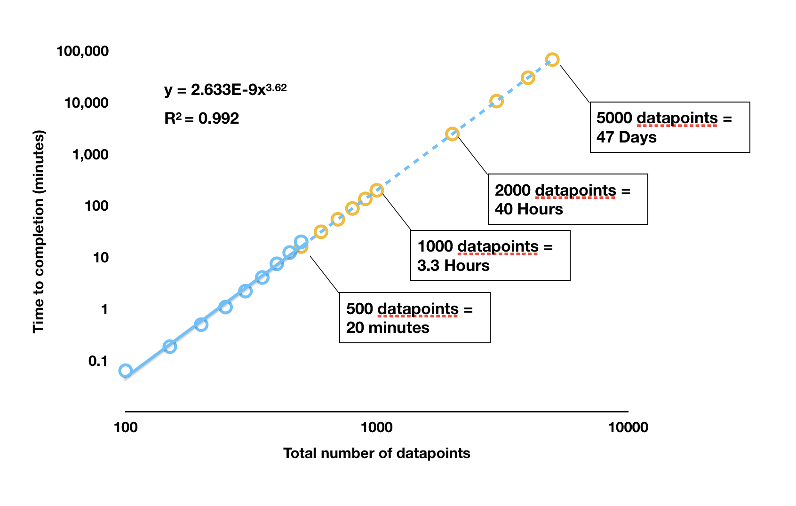
LoLinR processing times
rankLocReg() was run on different sized datasets (blue
dots) and the time to completion recorded. These analyses were run in
RStudio on the same dataset subset to the appropriate length, on a 2017
Macbook Pro with 3.1 GHz Intel Core i5 processor, 16GB RAM, and no other
applications running. The orange dots are estimated completion times for
larger datasets extrapolated from the results. Note the log
scale.
As we can see, any dataset larger than around 400 to 500 in length
takes a prohibitively long time to be processed by
rankLocReg(). In a test under the same conditions,
auto_rate() processed a dataset of 5000 datapoints in size
in 1.25 seconds; rankLocReg() would take 47 days. One
dataset included in respR (squid.rd) is over
34,000 datapoints in length. auto_rate() completed analysis
of this dataset in 18.5 seconds; under the exponential relationship of
rankLocReg() this would take approximately 163
years to be processed. In reality, it is likely (as we have
experienced) RAM limits will cause the rankLocReg() process
to crash well before these durations are reached.
The developers of LoLinR are aware of the processing
limitations of rankLocReg(), and in the documentaton for
the package recommend thinning (i.e. subsampling) datasets longer than
500 in length using another function that they provided,
thinData().
However, thinning datasets of thousands to tens of thousands of
datapoints to only a few hundred would inevitably cause loss of
information, which may not be desirable in certain use cases.
Comparisons
We provide below comparisons of the outputs of
auto_rate() and rankLocReg() on simulated data
generated by the sim_data() function and on real
experimental data included in both packages. Because of
rankLocReg()’s limitations for large data, the analysis of
all data in these comparisons is restricted to 150 data points. There
are no such restrictions in auto_rate(), so for
experimental data it was used without modifications to its length.
However for rankLocReg() they were, as recommended in the
LoLinR documentation, subsampled beforehand to 150
datapoints in length using the thinData() function. Because
rankLocReg() has three different methods (z,
eq, and pc) to rank the data, for the
comparisons below we selected the most accurate method that best ranked
the data in each case.
We show the output diagnostic plots for each function on six sample data analyses, plus a summary of the top ranked linear section identified showing the rate, and start and end times of the estimated linear region.
Simulated data: default
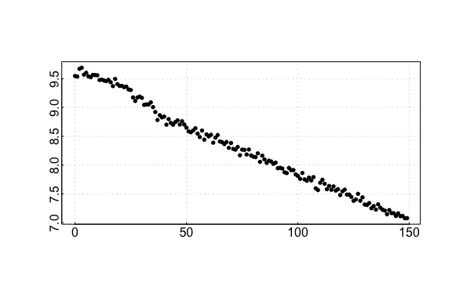
auto_rate comparison: simulated data
## respR:
rspr1 <- auto_rate(sim1$df)#>
#> 7 kernel density peaks detected and ranked.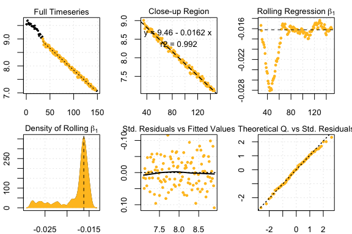
auto_rate results
## LoLinR:
lir1 <- rankLocReg(xall = sim1$df$x, yall = sim1$df$y, 0.2, method = 'pc')
plot(lir1)#> rankLocReg fitted 7260 local regressions.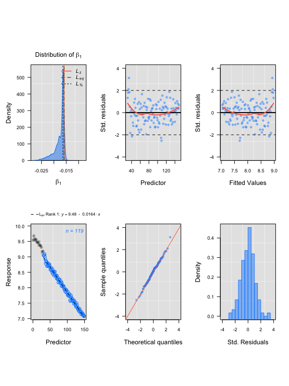
LoLinR results
#> Compare top ranked outputs#> respR
#> Rate: -0.0162
#> Start Time: 35
#> End Time: 146#> LoLinR
#> Rate: -0.0164
#> Start Time: 32
#> End Time: 150Simulated data: corrupted
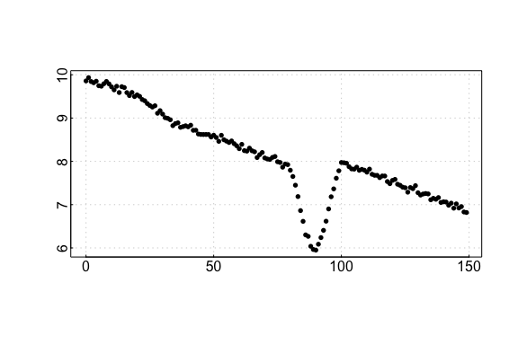
auto_rate comparison: sardine data
## respR:
rspr2 <- auto_rate(sim2$df)#>
#> 31 kernel density peaks detected and ranked.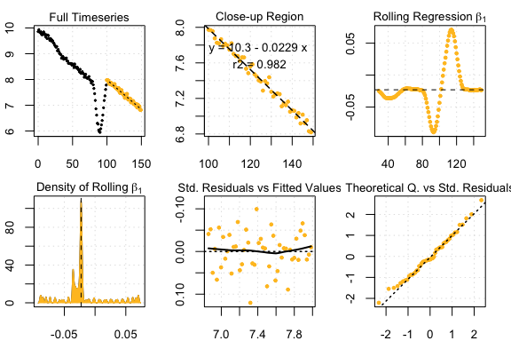
auto_rate sardine results
## LoLinR:
lir2 <- rankLocReg(xall = sim2$df$x, yall = sim2$df$y, 0.2, "pc")
plot(lir2)#> rankLocReg fitted 7260 local regressions.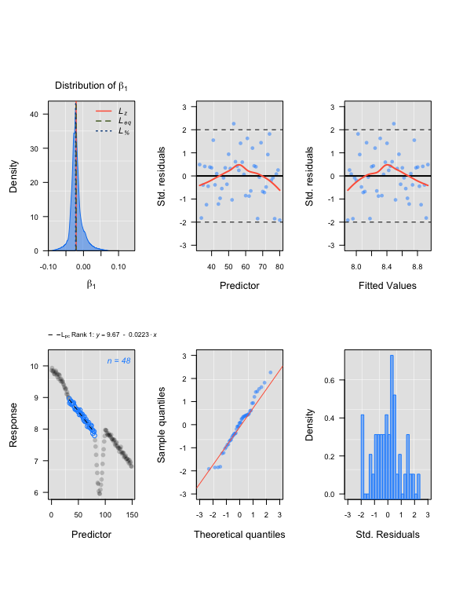
LoLinR sardine results
#> Compare top ranked outputs#> respR
#> Rate: -0.0227
#> Start Time: 79
#> End Time: 149#> LoLinR
#> Rate: -0.0228
#> Start Time: 87
#> End Time: 130Simulated data: segmented
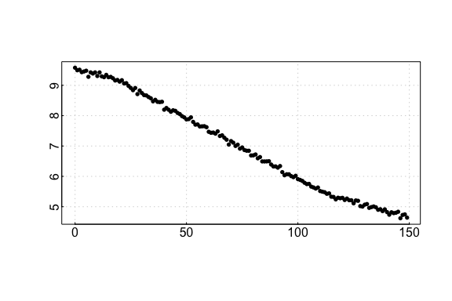
auto_rate comparison: urchin data
## respR:
rspr3 <- auto_rate(sim3$df)#>
#> 6 kernel density peaks detected and ranked.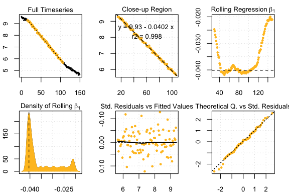
auto_rate urchin results
## LoLinR:
lir3 <- rankLocReg(xall = sim3$df$x, yall = sim3$df$y, 0.2, "pc")
plot(lir3)#> rankLocReg fitted 7260 local regressions.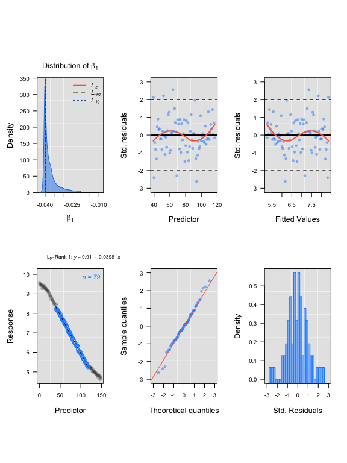
LoLinR urchin results
#> Compare top ranked outputs#> respR
#> Rate: -0.0402
#> Start Time: 15
#> End Time: 106#> LoLinR
#> Rate: -0.0398
#> Start Time: 40
#> End Time: 118Experimental data: UrchinData from LoLinR
## respR:
Urch1 <- select(UrchinData, 1, 4)
respr_urchindata <- auto_rate(Urch1)#>
#> 4 kernel density peaks detected and ranked.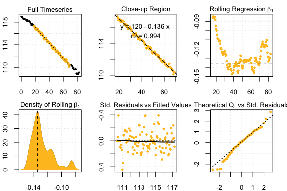
auto_rate comparison: squid data
## LoLinR:
lolinr_urchindata <- rankLocReg(xall=UrchinData$time, yall=UrchinData$C, alpha=0.2, method="z")
plot(lolinr_urchindata)#> rankLocReg fitted 8911 local regressions.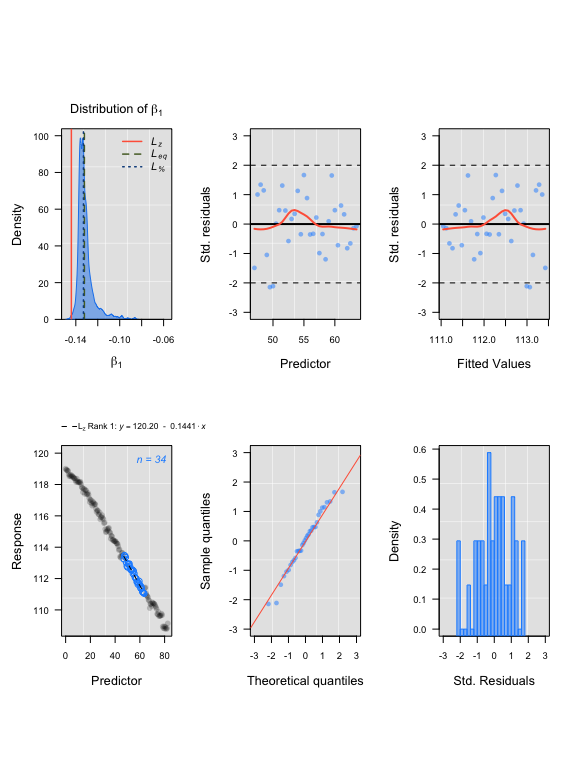
auto_rate squid results
#> Compare top ranked outputs#> respR
#> Rate: -0.1363
#> Start Time: 18.5
#> End Time: 69#> LoLinR
#> Rate: -0.1441
#> Start Time: 47
#> End Time: 63.5Experimental data: CormorantData from LoLinR
## respR:
rcor <- auto_rate(CormorantData)#>
#> 43 kernel density peaks detected and ranked.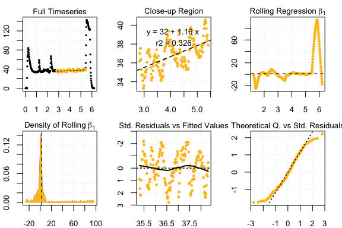
auto_rate comparison: intermittent data
## LoLinR:
lcor <- thinData(CormorantData, by = nrow(CormorantData)/150)$newData1 # thin data
lcoregs <- rankLocReg(xall=lcor$Time, yall=lcor$VO2.ml.min, alpha=0.2,
method="eq", verbose=FALSE)
lcoregs <- reRank(lcoregs, newMethod='pc')
plot(lcoregs)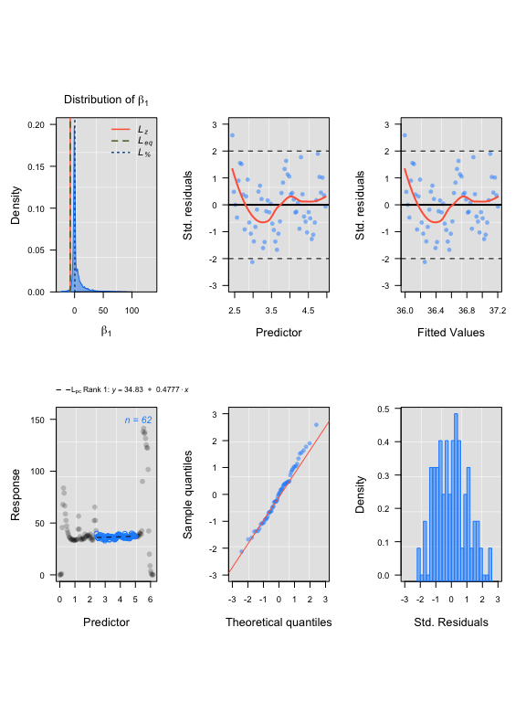
auto_rate intermittent results
#> Compare top ranked outputs#> respR
#> Rate: 1.16313
#> Start Time: 2.83
#> End Time: 5.41#> LoLinR
#> Rate: 0.47775
#> Start Time: 2.44
#> End Time: 4.97Experimental data: squid.rd from respR
## respR:
rsquid <- auto_rate(squid.rd)#>
#> 32 kernel density peaks detected and ranked.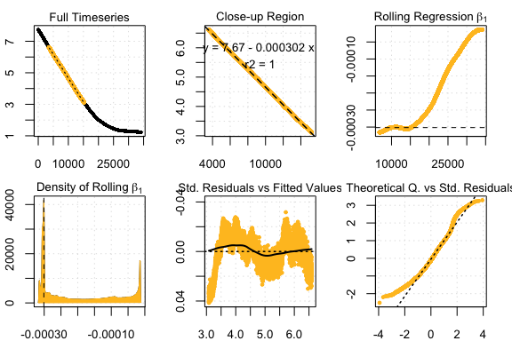
LoLinR intermittent results
## LoLinR:
lsquid <- thinData(squid.rd, by = nrow(squid.rd)/150)$newData1
lsquidregs <- rankLocReg(xall=lsquid$Time, yall=lsquid$o2, alpha=0.2,
method="eq")
plot(lsquidregs)#> rankLocReg fitted 7260 local regressions.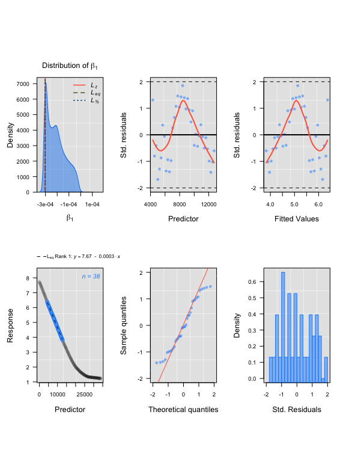
LoLinR intermittent rate extraction
#> Compare top ranked outputs#> respR
#> Rate: -0.00030151
#> Start Time: 3589
#> End Time: 15219#> LoLinR
#> Rate: -0.00030188
#> Start Time: 4321
#> End Time: 12738Summary
We can see from the above comparisons that in these examples on small
datasets, auto_rate and rankLocReg output
similar results in identifying linear regions. Rates identified are
often (within the magnitudes of the data ranges used) only marginally
different, and typically the start and end times of the linear region
identified are similar, or at least the regions widely overlap.
Again, we must stress that comparisons between these functions are
limited because of the need in rankLocReg to subsample long
data to a manageable length. It is likely that some of the minor
differences in results comes from reducing the number of datapoints
rankLocReg has to work with, though some is also presumably
attributable to the different analytical methodologies. These results do
suggest that this thinning does not radically alter the data, and so the
results from rankLocReg would be valid in these cases.
However, this is a very limited comparison: in these examples we only
had to thin two of the datasets. There may be cases where such thinning
alters the characteristics of the data such that rankLocReg
identifies incorrect linear segments, or identifies different linear
sections depending on the degree of thinning performed. This could
particularly be the case where the rates fluctuate rapidly, or data is
of very high resolution. The same is of course true of
auto_rate; the algorithms are complex but fallible, so it
may on occasion identify spurious or incorrect linear regions. So we
again remind users that they should always examine the results output by
auto_rate to ensure they are relevant to the question of
interest.
In the case of which of these methods to use with your respirometry
data, caution would suggest that all possible datapoints be used in
analyses if possible, and as we have shown here and in the performance
vignette auto_rate handles large data easily, while
LoLinR clearly does not.
Users are very much encouraged to explore both functions and compare
the outputs with their own data. However, given that
auto_rate and rankLocReg appear to perform
similarly in identifying linear regions of data, but in
auto_rate a reduction in data resolution is unnecessary, we
would advocate the use of auto_rate for your respirometry
data unless you have a particular reason to believe LoLinR
package will output more relevant results.
References
Olito, C., White, C. R., Marshall, D. J., & Barneche, D. R. (2017). Estimating monotonic rates from biological data using local linear regression. The Journal of Experimental Biology, jeb.148775-jeb.148775. doi:10.1242/jeb.148775